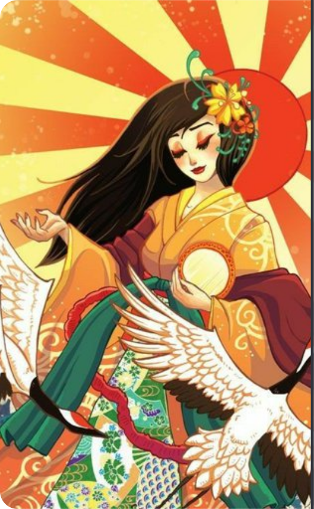

O Mito da Criação
The glitz, glamour, and unbridled decadence of the 80s are back in Yakuza 0.Fight like hell through Tokyo and Osaka with protagonist Kazuma Kiryu and series regular Goro Majima. Play as Kazuma Kiryu and discover how he finds himself in a world of trouble when a simple debt collection goes wrong and his mark winds up murdered. Then, step into the silver-toed shoes of Goro Majima and explore his “normal” life as the proprietor of a cabaret club.
The glitz, glamour, and unbridled decadence of the 80s are back in Yakuza 0.Fight like hell through Tokyo and Osaka with protagonist Kazuma Kiryu and series regular Goro Majima. Play as Kazuma Kiryu and discover how he finds himself in a world of trouble when

Ame-no-Minakabushi
“Deidade do Augusto Centro do Céu”
Não há nenhum registro indiscutível existente de que Ame-no-Minakanushi tenha sido adorado em qualquer santuário antigo conhecido (o Engishiki , compilado no início do século X, nunca menciona nenhum santuário para esta divindade); isso, combinado com a falta de informações sobre o deus fora dos documentos associados à corte imperial, como Kojiki e Shoki (como visto acima, mesmo nesses textos, quase nenhuma menção é feita a este deus), levou alguns estudiosos a considerar Ame-no-Minakanushi uma divindade abstrata (ou seja, um deus que só existe no papel, sem adoradores reais ou culto dedicado a ele) criado sob a influência do pensamento chinês.Outros estudiosos, no entanto, argumentam que a escassez de evidências para a adoração de Ame-no-Minakanushi na antiguidade não significa necessariamente que o deus seja puramente uma invenção literária.